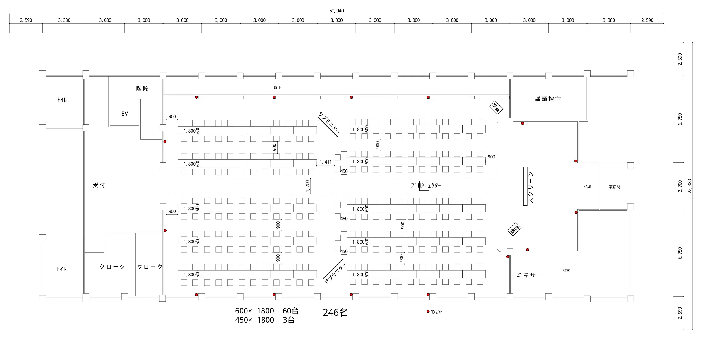
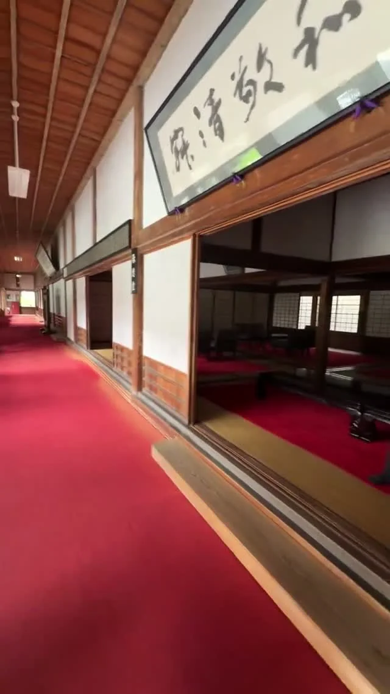
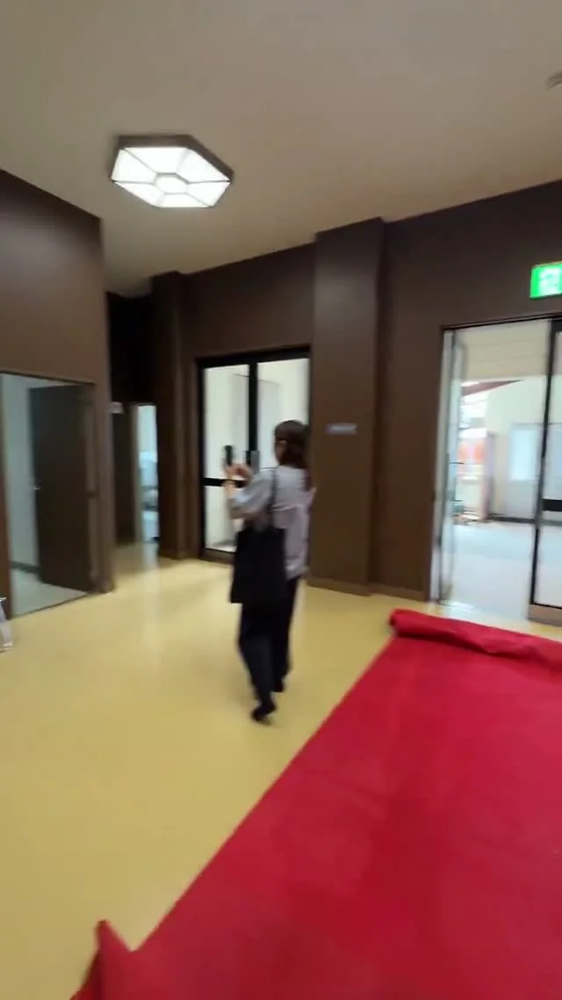
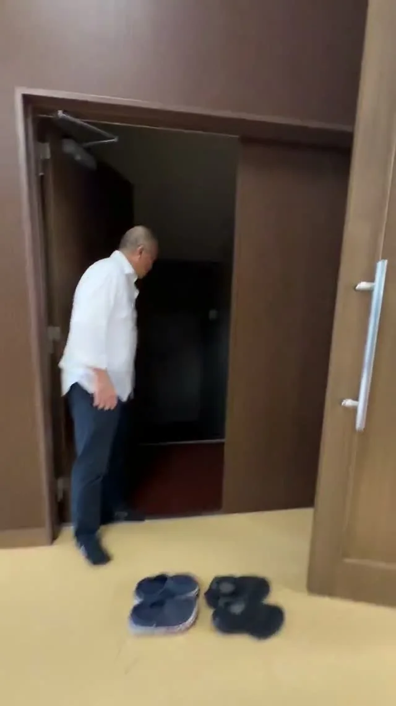
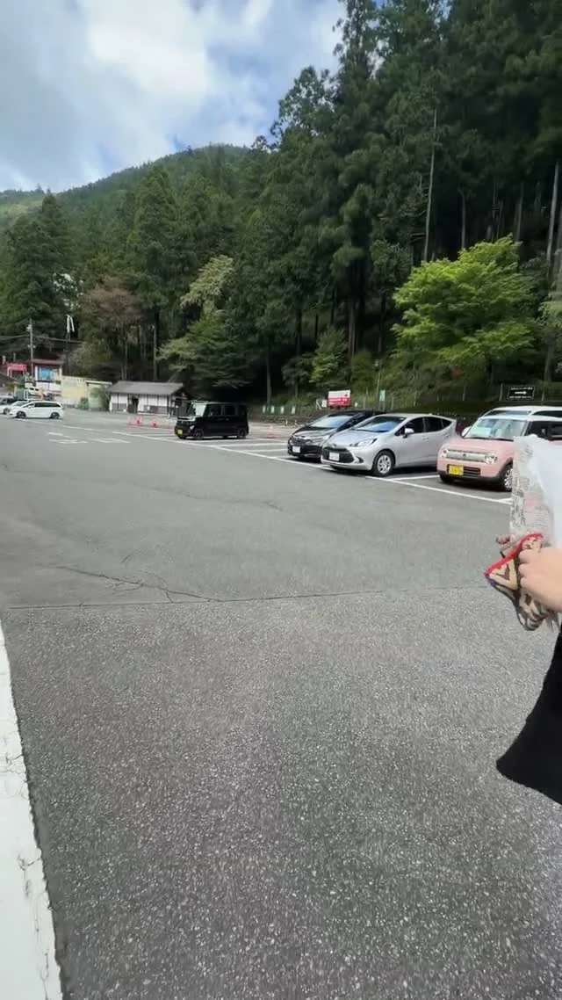
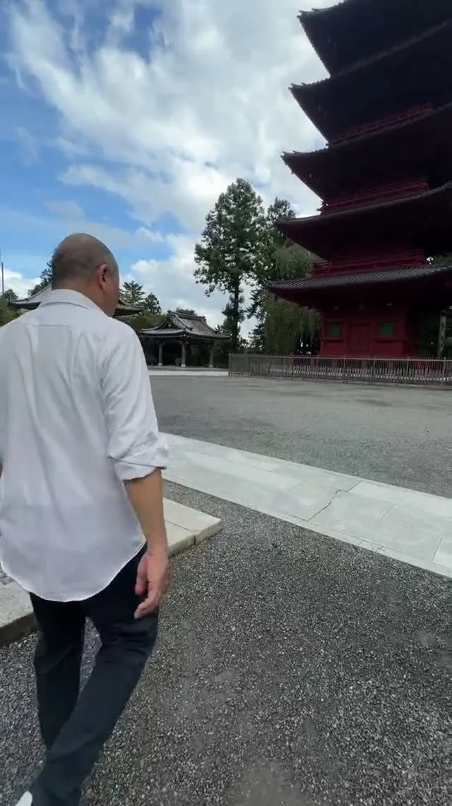
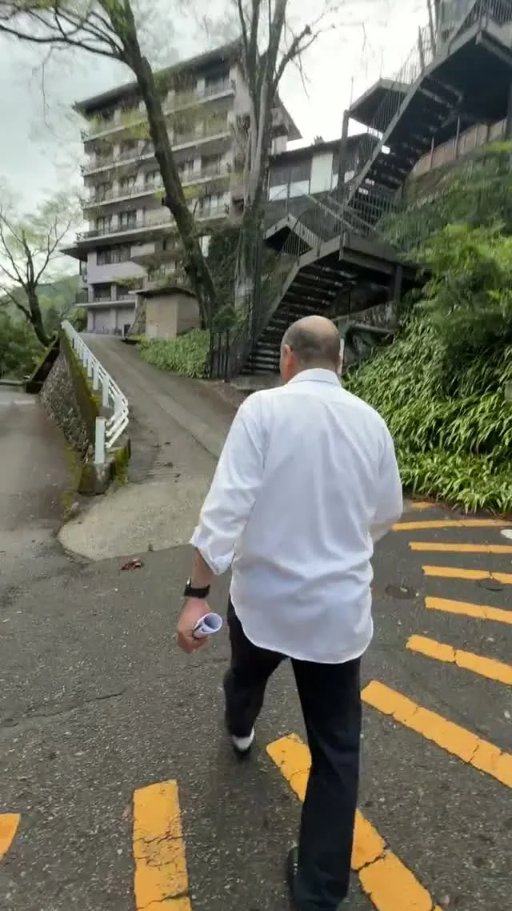
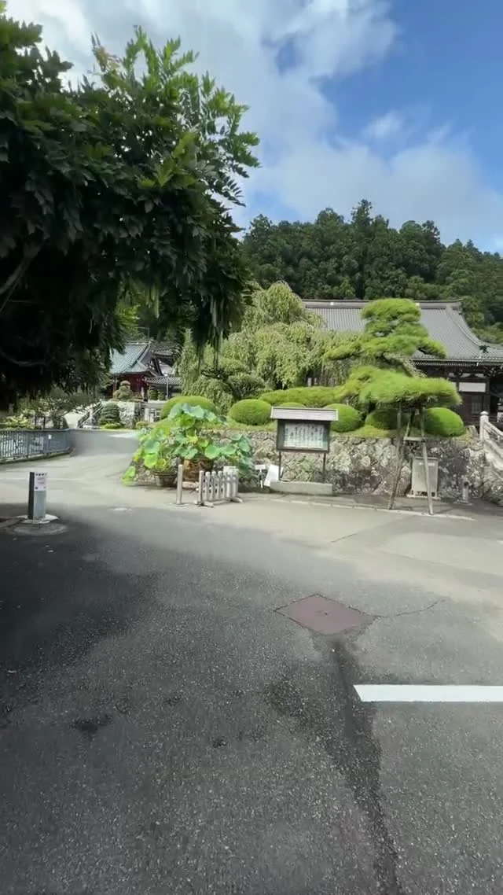

身延山大学 本館5F講堂（主会場）
2027年4月27日の主会場は、身延山大学 本館5F講堂です。大学側から会場使用の承諾を得ており、久遠寺にも日程を共有したうえで開催に向けた調整を進めてもらいます。講堂は246名で席を組んでいます（会議では人数を減らす話は出ていません）。机・通路・運営動線の調整により、人数が多少変動する可能性があります。
| 項目 | 内容 |
|---|---|
| 名称 | 身延山大学 本館5F 講堂（公式キャンパスマップに記載） |
| 所在地 | 山梨県身延町・身延山大学キャンパス内（本館5F） |
| 交渉状況 | 開催承諾済み 申込書類・会場使用手続きは大学側の整理後に受領する |
| 大学側の主窓口 | 丸茂 龍正さん（学校法人身延山学園 法人事務局長）。大学とのやり取りは会場チームの掛布さんに集約する。役職の出典は身延山大学公式資料 |
| 収容規模 | 246名（10/15版の席レイアウト図）。机・通路・運営動線の調整により、人数が多少変動する可能性がある |
| 席レイアウト | 10/15版は、幅600mmの長テーブルを1列ずつ並べた配置（600×1800を60台、450×1800を3台）。扇形（ハの字）に角度をつける案を検討中（下の図） |
| 設備・什器 | 椅子は437脚（視察メモ）。机は大学側にもいくつかあるが、不足分は外部手配の見込み。リース会社は丸茂さんから紹介してもらう予定で、正式社名・取扱品目・見積条件は紹介時に確認する。音響・照明・コンセントなどは視察メモを参照 |
| 使える時間 | 当日は受付9:30・開会10:30・終了18:00（予定）。前日から講堂に入れるか、当日朝は何時から入れるか、撤去を終える期限（夜7時か8時か）を、掛布さんが丸茂さんに確認中 確認中 |
大学側のご挨拶: 会の冒頭に、身延山・身延山大学から歓迎のご挨拶と簡単なご紹介をいただきます（大学側では学長へ依頼し、承諾をいただいています）。10/30の会議で、冒頭（10:30の開会直後）に入れる方向とし、掛布さんが丸茂さんに承認を取ります。時間の長さは大学側と最終調整します。
次に片づけること: ①丸茂さんへの確認（入館時刻・撤去の期限・時間割の承認・学長のご挨拶）、②扇形の席レイアウト案、③申込書類・会場使用手続きと正式見積・支払条件・キャンセル規定、④机の手配。
講堂の席レイアウト図（10/15版）検討中

| 席数 | 246名 |
|---|---|
| 机 | 600×1800の長テーブル60台、450×1800を3台。幅600mmの長テーブルを1列ずつ並べている（2台をつなげず1列）。パソコンを4台置くのは難しい幅 |
| 通路 | 机の列の間は900mm、中央の通路は1200mm（図の寸法） |
| 受付 | 講堂の入口側。受付に使える幅は3m弱で、名前順に列を何本も作るのは難しい。手前のホールに仮受付を置く案がある（受付チーム） |
| その他 | クローク2か所、講師控室、ミキサー、メインスクリーン、サブモニター2台、プロジェクター、コンセントの位置を記載 |
扇形（ハの字）の案を検討中: 大岡さんから、席を減らさずにスクリーンへ向けて角度をつける配置の提案がありました。今の図は、非常時の避難経路を考えてまっすぐ並べたものです。掛布さんが角度をつけた案を図にして運営リーダー会のチャットに出し、意見を聞いて確定させます。席案内は島ごとに担当を置き、現場監督役を2〜3人置く案も出ています。
会場の下見動画（7本）
掛布さんが現地で撮った動画です（10/30に運営リーダー会へ共有）。カードを押すとGoogleドライブで再生します。動画のフォルダを開く

▶ 再生受付・誘導
一時受付場所
靴を脱いですぐの場所。仮受付を置く候補

▶ 再生受付
講堂内_受付エリア
講堂前の本受付のあたり。受付に使える幅は3m弱

▶ 再生受付・誘導
講堂内_受付から大学階段導線
受付から大学側の階段へ向かう道。帰りの動線の確認に

▶ 再生誘導
お客様駐車場と丸茂さん
参加者が車を停める駐車場の様子

▶ 再生誘導
ゴンドラ降りてから本堂まで
ゴンドラを降りてから本堂までの道

▶ 再生誘導
帰りルート01：身延山大学から身延山の南玄関まで
参加者の帰り道の前半

▶ 再生誘導
帰りルート02：身延山の南玄関からゴンドラまで
参加者の帰り道の後半
視察メモ（奈津美さんの記録）
身延山大学の「会場視察チェックリスト」への手書きの書き込みを読み取ったものです。視察日はメモでは2026年9月8日（別の記録では9月9日。日付は要確認）。手書きで読みが怪しいところには「読み要確認」と添えました。2026年9月時点の話なので、条件は大学への確認で確かめ直します。チーム別の分は各チームのページにも載せています。
| 項目 | メモの内容 | 主に使うチーム |
|---|---|---|
| 前日の準備 | OK（メモの記録）。入れる時刻は丸茂さんに確認中 | 会場 |
| 机 | 大学側にもいくつかある。丸テーブルはレンタル。書き込みの「68×186」「455×18」（読み要確認）、横の「29」は何の数か不明 | 会場 |
| 椅子 | 437脚。「中にあるかも」の書き込みあり | 会場 |
| 音響・映像 | マイク2台、スピーカーは前に2つ、プロジェクターはなし、大型のスクリーンがステージにある。備考に「ワイヤレスマイク2つ、スタンド」（マイク2台と同じものかは要確認） | 会場 |
| 照明 | ◯。カーテンを閉めて暗くできる | 会場 |
| コンセント | 上段4か所、下段12か所（写真あり） | 会場 |
| Wi-Fi | △（詳しいことは書かれていない）。配信や資料の共有に使うなら事前に確かめる | 会場 |
| 空調 | あり | 会場 |
| 撮影・録画 | OK | 会場 |
| 搬入 | 大学側で搬入したあと、車は寺の入口に停める | 会場・誘導 |
| ゴミ・掃除 | ゴミは基本は持ち帰り。床はカーペットなので掃除機を持っていく | 会場（備品・後処理） |
| 受付 | 受付のテーブルは大学側で用意してもらえる。案内の掲示物のボードを置けるかは空欄 | 受付 |
| 下足袋 | 用意が要る（10/30の会議で、誘導チームが用意して下駄箱で渡すことに） | 誘導 |
| 荷物 | ◯。クロークあり、運営用のクロークもあり | 受付 |
| トイレ | 5階。男性は小便器5・個室2、女性は個室5 | 全員 |
| バリアフリー | 3階がバリアフリー（車いすの方の案内の道筋） | 誘導 |
| 喫煙所 | バルコニーに2か所 | 全員 |
| 飲食 | 持ち込みOK（9月の視察の記録）。講堂で全員が昼食をとってよいかは丸茂さんに確認中 | 宿泊・ケータリング |
| 自動販売機 | 大学の1階に3台。学生が優先なので、飲み物は持ち込みで | 宿泊・ケータリング |
| 周辺 | 駅前にビジネスホテルあり。「28日に日蓮のイベントあり」の書き込み（何月の28日か、合宿への影響は要確認） | 宿泊・ケータリング |
| 空欄の項目 | 収容人数とレイアウト、入館時刻、鍵、緊急時の連絡先、キャンセル・延長料金、追加備品の料金。丸茂さんへの確認とあわせて埋める 確認中 | 会場 |
覚林坊（宿泊・昼食のケータリング）
身延山の宿坊です。宿泊と当日の昼食をお願いしています。やり取りは宿泊・ケータリングチームの上嶋さんが受け持ちます（2026年10月26日に引き継ぎ）。会場の利用に関する話は、会場チームから丸茂さんへ集約します。
| 宿泊 | 今回の日程で覚林坊をすでに押さえてある（どの夜・何部屋かは確認中）。足りない部屋は覚林坊が観光協会に相談し、どの宿坊・ホテルでも同じ料金になるよう調整を進めている |
|---|---|
| 運営の前泊 | 運営メンバーは全員前泊（約90名）。前泊の宿を確実に確定させることが最優先（上嶋さん） |
| 昼食 | 参加者全員分のケータリングを覚林坊が引き受けてくれた。配膳までしてくれるかは上嶋さんが確認する。講堂で食べてよいかは丸茂さんに確認中 |
| 送迎 | 宿から大学までは各宿の送迎を基本案とする。台数・時間・費用は宿泊の手配とあわせて確認する 未定 |
入場と退場の動線（久遠寺は通るだけ）
久遠寺は合宿会場として使用しません。入口は寺側、出口は大学側です（寺が午後4時に閉まるため）。お寺の入口から受付まで、受付から講堂までの道のりがとても長く、曲がり角ごとに案内役が要ります。
| 行き | 駐車場（またはゴンドラ）→ 久遠寺側の入口 → 下駄箱で靴を脱ぎ、袋に入れて持つ → 仮受付（案）→ 寺の中を通って大学へ → 講堂前の本受付 → 席へ |
|---|---|
| 帰り | 講堂からエレベーター（1基）と階段で大学の1階へ降り、大学側の出口1か所にまとめて出る。大学を出てから6人ほど、階段の上と下に1人ずつ置く想定。駐車場までは歩いて10分ほどかかる |
| 人の配置 | 誘導チームが動線を確かめて曲がり角の数を数え、最低限必要な人数を出す。当日は遅くとも8時には配置につく |
| 未確定 | 通行できる時間帯、使える入口と通路、誘導の表示、雨の日の扱い 確認中 |
道の様子は下見動画で確かめられます。
アクセスメモ
| 項目 | 内容 |
|---|---|
| 最寄り駅 | JR身延線「身延駅」 |
| 東京方面から | 新幹線で静岡駅、または中央本線で甲府駅まで行き、身延線に乗り換えるルートが一般的 |
| バス | 未定（身延駅〜会場間の路線・貸切の要否を含めて未整理） |
| 駐車場 | 大きく2か所。当日の参加者は90台分の駐車場に集約し、前日入りの運営は別の駐車場に停める案（誘導チーム）。台数と身延山周辺の地図は奈津美さんから誘導チームへ渡し済み。使い分けとバスの乗降場所、雨の日の動線は確認中 |
| 宿泊施設からの移動 | 宿泊先ごとの送迎を基本案とし、宿から大学までの所要時間、乗降場所、往路・復路の運行時間を整理する |
| 当日の入場 | 久遠寺側の入口から入り、寺の中を通って大学講堂へ向かう。入口は寺側、出口は大学側 |
| 当日の退出 | 終了18:00（予定）。講堂からエレベーターと階段で大学の1階へ降り、大学側の出口から出る（入場と退場の動線） |
下見記録
| 日付 | 確認内容 | 確認者 |
|---|---|---|
| 2026-09-09 | 会場チームが現地視察を実施。講堂の平面図、机・椅子、受付、控室、休憩場所、設備・備品、入退場動線を確認し、CADレイアウトの作成へ進んだ | 会場チーム／現地視察 |
| 2026-07-05 | 身延山大学・久遠寺周辺を現地下見。大学講堂、寺側からの導線、スクリーン、駐車場からの導線、久遠寺の諸堂案内図・境内案内図を確認 | 白都／現地下見／Circleback |
| 2026-07-04 | 下見記録の運用を開始（実施後にここへ追記） | — |
下見を実施したら、この表の APPEND マーカー直下に新しい行を追加してください（新しいものが上）。